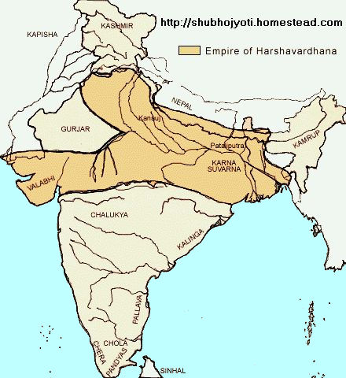

Rise of Pushyabhuti ,Shashanka,Chalukyas and Pallavs
Origins
- Pushyabhutis were fedutories under Guptas
- They assumed independance after the Huna invasion
Pushyabhuti Dynasty
- Pravakarvardhan (580 - 605 A.D) was the first important ruler he was succeeded by Rajyavardhan
- Grahavarman (Maukhari ruler of Kannauj), husband of Rajyashree (sister of Rajyabardhan) was murdered by Devagupta in alliance with Shashanka
- Rajyavardhan killed Devagupta but was himself killed by Shashanka in year 606
Harshavardhan (606 - 647)

- Known as Siladitya.Harsha era started from 606 A.D
- Kannauj was his capital
- Last great Hindu ruler of India
- Defeated Dhruvasena, the Maitraka ruler of Vallabhi
- Faced great resistance in the east by Shashanka
- Defeated by 2nd Pulakeshi, the Chalukya king of Batapi
- Chinese pilgrim Hiuen Tsang visited during his reign
- Banbhatta (writer of Harshacharit and Kadambari) was his court poet
- Harshavardhan himself wrote Nagananda,Ratnabali and Priyadarshika
- He was a Shaivite
- Used to celebrate a solemn festival at Prayag every five years
Shashanka of Gaur
- Some believe he was a feudal lord under gupta leader Mahasengupta
- He established the Gaur empire before 606
- His capital was at Karnasubarna (near Baharampur)
- He conquered Dandabhukti,Utkal and Kangod
- He married Rajyashree the dauthger of Pravakarvardhan
- He killed Rajyabardhan, the son of Pravakarvardhan
- Harshavardhan was not able to harm Shashanka in any way
- His empire paved the way for the future Pal and Sen rulers of Bengal
- Died in 637
Chalukyas Of Batapi
- First capital was Batapi (in Bijapur)
- 1st Pulakeshi (535 - 566) was the first free king
- His deeds are known from the Batapi inscriptions.Kirtibarman was his successor
- Kirtibarman extended his empire upto bihar and bengal,he also conquered Chola,Pandya
- 2nd Pulakeshi (610-642) was the greatest king of this dynasty
- His deeds are known from Aihole inscriptions writen by his court poet Ravikirti
- He defeated Harshavardhan
- He defeated Pallav king 1st Mahendravarman
- He was killed by Narasinghavarman I, son of 1st Mahendravarman
- After his death Chalukya became weak and there was constant feus between Pallavas and Chalukyas
- Many paintings and sculptures of the Ajanta and Ellora caves were completed during the reign of the Chalukyas
- In the middle of the eigth century the Rastrakuts became the major power in the south
Pallavs Of Kanchi
- Chalukya Pallava feud began at the time of 1st Mahendravarman (600 -630)
- He was known by the names Bichitrachitta,Pallavmalla,Gunavar,Chaitakari
- He wrote Mattabilas-Prahasana
- Defeated by 2nd Pulakeshi
- Narasinghavarman I was the greatest ruler of the Pallavs
- He defeated and killed 2nd Pulakeshi and adopted the title of Batapikond, He was also known as Mahamalla
- Mahabalipuram temples were built during his reign